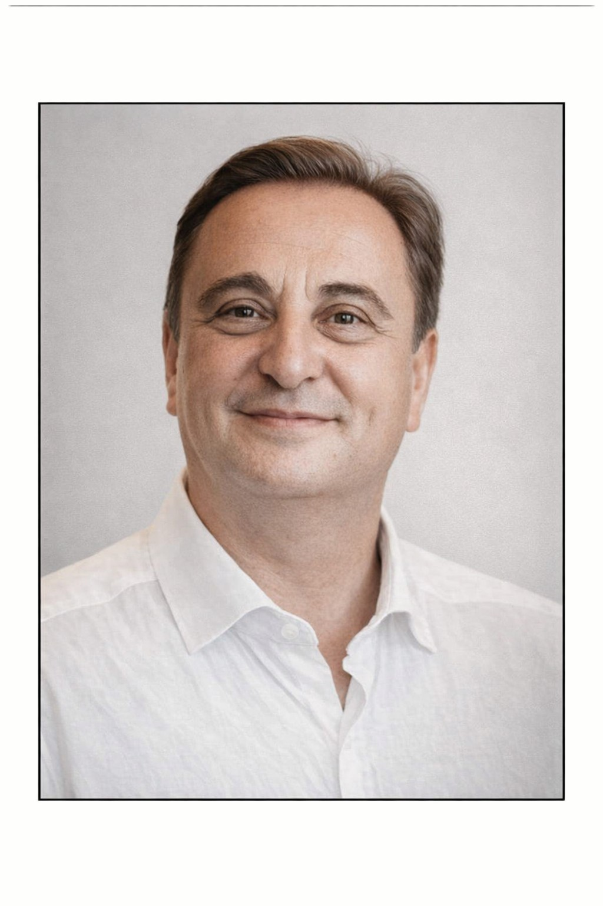

Gabriel Ethan Paz é um escritor português, membro da Associação Portuguesa de Escritores (#1584), da Associação Portuguesa de Poetas e do NALAP - Núcleo Académico de Letras e Artes de Portugal. Autor registado na IGAC, constrói obras marcadas pela emoção, pela verdade e pela busca de sentido.
Gabriel Ethan Paz é o pseudónimo de um cidadão português, nascido na cidade de Almada, que fez carreira profissional na Industria Farmacêutica. Desempenhou várias funções de marketing e vendas antes de rumar à carreira internacional onde foi Diretor Geral numa empresa sediada no Caribe.
Licenciado em Gestão de Marketing pelo IPAM, com pós graduação obtida em Bruxelas em Marketing Estratégico, decidiu numa fase da sua vida mais recente não dar seguimento ao MBA, por cansaço académico e motivacional. Preferiu enveredar pela escrita de obras de diversos géneros literários
e dedicar o seu tempo a hobbies que foram preteridos como a leitura e a música. Entusiasta ebuliente da inteligência emocional, não tem receio em expor os seus sentimentos e emoções da forma mais nua e genuína. É apaixonado por animais, pela natureza e pela praia, tendo no mar a sua principal
fonte de inspiração e serenidade. Não vive sem a música e o piano o instrumento musical de eleição.
Viajante pelos quatro continentes, deambulou por mais de 67 países e 128 cidades onde experimentou novas culturas e costumes que o converteram numa pessoa mais sábia, mais benévola e discernente do mundo que nos rodeia.
E a sua viagem parece não ter ainda findado.